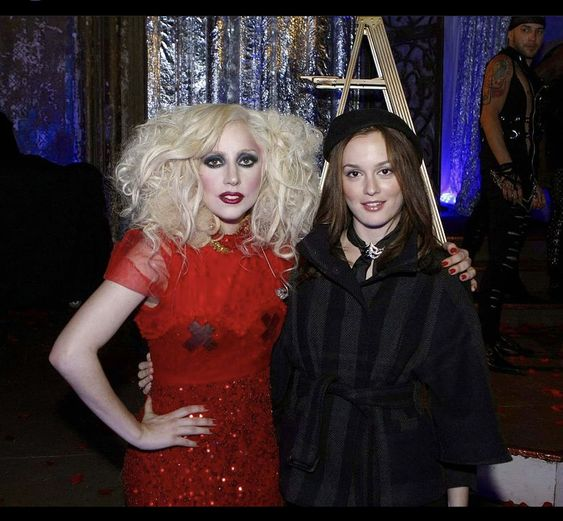

Soy una profesional en Ingeniería de Sistemas con una sólida formación técnica y una pasión innata por la creatividad y la innovación. Mi enfoque hacia la resolución de problemas y mi capacidad para abordar desafíos tecnológicos demuestran mi compromiso y habilidades excepcionales en el campo de la ingeniería. Mi enfoque responsable y mi amor por el arte se suman a mi personalidad versátil y orientada al éxito. Estoy emocionada por las oportunidades que el futuro profesional pueda ofrecerme, y estoy segura de que mi combinación única de habilidades aportará un valor significativo a cualquier proyecto en el que participe.
Perfil profesional
COMPETENCIAS
- Creatividad y Innovación:
- Mi naturaleza creativa me permite abordar problemas desde perspectivas únicas, proponiendo soluciones innovadoras y eficientes.
- Responsabilidad y Compromiso:
- Soy una profesional responsable que asume con seriedad los proyectos asignados, garantizando la entrega de resultados de alta calidad en tiempo y forma.
- Trabajo Duro y Persistencia:
- Mi ética laboral y mi capacidad para perseverar en situaciones desafiantes me han permitido superar obstáculos y alcanzar metas profesionales.
- Trabajo Duro y Persistencia:
- Mi ética laboral y mi capacidad para perseverar en situaciones desafiantes me han permitido superar obstáculos y alcanzar metas profesionales.
- Lectura Activa:
- Tengo una inclinación hacia la lectura, lo que me permite mantenerme actualizada en las tendencias tecnológicas y adquirir conocimientos relevantes para mi campo.
- Aprecio por el Arte:
- Mi interés por el arte no solo añade una dimensión cultural a mi personalidad, sino que también influye positivamente en mi capacidad para abordar problemas de manera estética y funcional.
EXPERIENCIA LABORAL Y ESTUDIOS
- Ingeniería de Sistemas e Informática
- Master in Data Science
- Pasante en análisis de datos para Meta
- Líder de proyecto de
- Analista de datos para Meta
Universidad Pontificia Bolivariana seccional Bucaramanga
2016-2020
Brown University, Boston.
2020-2022
California, United States of America
2019-2020
California, United States of America
2020-2024
California, United States of America
2020-2024
REFERENCIAS PERSONALES
- José Gabriel Reyes
📞 324598713
🖂 jose.gabriel.2022@upb.edu.co
- Bill Gates
📞 6662487
🖂 bill.gates.2020@microsoft.com
- Mark Zuckerberg
📞 777666999
🖂 mark@facebook.com
GUSTOS ARTISTICOS
Marina and the diamonds- Radioactive
